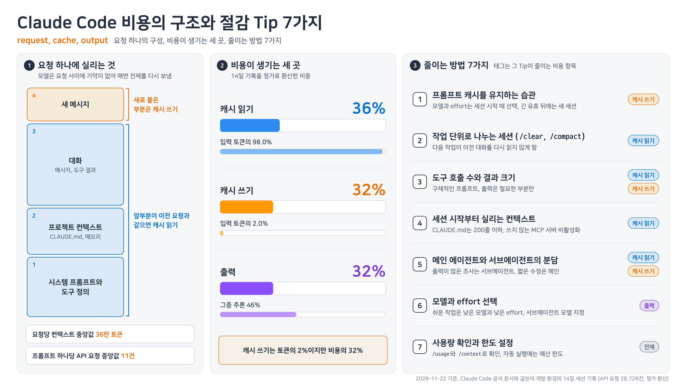
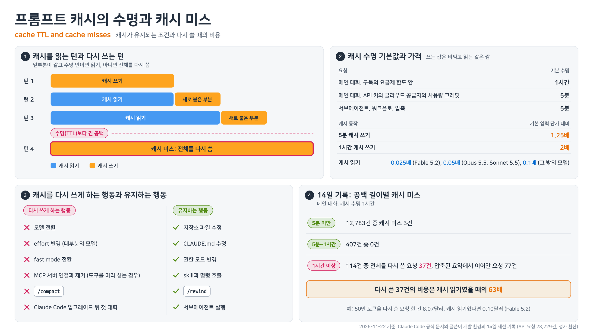
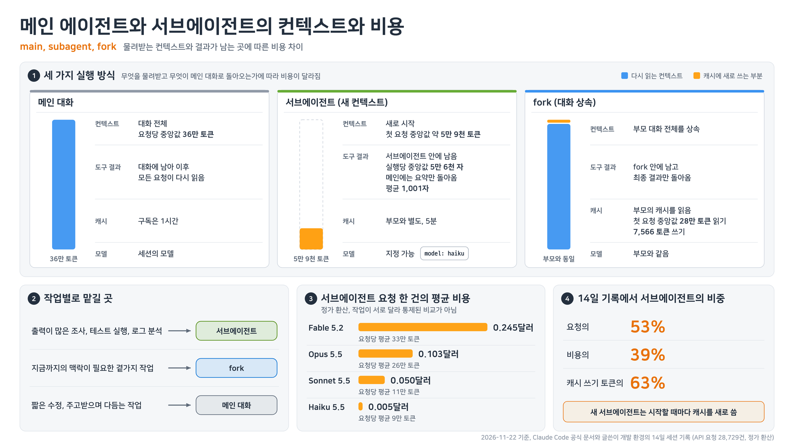

Claude Code 비용 절감 Tip 7가지Seven tips for cutting Claude Code costs
Claude Code의 비용을 줄이는 방법을 공식 문서 기준으로 정리하고 제 개발 환경의 최근 14일 세션 기록(API 요청 28,729건)을 집계해 실제 비중을 확인해 보았습니다. 입력 토큰의 98%는 캐시 읽기였고 정가로 환산한 비용은 캐시 읽기 36%, 캐시 쓰기 32%, 출력 32%로 나뉘었습니다. 따라서 줄일 곳은 요청마다 다시 읽는 컨텍스트, 캐시를 다시 쓰게 하는 행동, 출력과 추론의 양 세 가지이고 이를 줄이는 Tip 일곱 가지를 설명합니다.I set out the ways to cut Claude Code costs from the documentation and checked the real shares against the last 14 days of session logs from my own environment (28,729 API requests). Cache reads were 98% of the input tokens, and at list prices the cost split into 36% cache reads, 32% cache writes and 32% output. So there are three things to cut: the context that every request reads again, the actions that make the cache be written again, and the amount of output and reasoning. The post explains seven tips that cut them.
- 캐시: 1시간 넘게 비운 뒤의 요청 114건 가운데 37건이 컨텍스트 전체를 다시 썼고 그 비용은 캐시에서 읽었을 때의 63배였습니다.Cache: of 114 requests that followed a gap of more than an hour, 37 wrote the whole context again, at 63 times what cache reads would have cost.
- 컨텍스트: 메인 대화의 요청은 중앙값으로 362,105토큰을 실었고 요청의 80%가 200,000토큰을 넘었습니다.Context: a request in a main conversation carried a median of 362,105 tokens, and 80% of the requests carried more than 200,000.
- 도구 호출: 프롬프트 하나가 중앙값으로 API 요청 11건을 만들었고 도구 결과의 93%가 Bash와 Read에서 나왔습니다.Tool calls: one prompt produced a median of 11 API requests, and 93% of the tool results by characters came from Bash and Read.
- 서브에이전트: 요청의 53%, 비용의 39%, 캐시 쓰기 토큰의 63%를 차지했습니다. 한 번 실행에 도구 결과를 중앙값으로 55,801자 받고 평균 1,001자를 메인 대화에 돌려줬습니다.Subagents: they made 53% of the requests, 39% of the cost and 63% of the cache-write tokens. One run took in a median of 55,801 characters of tool results and returned 1,001 characters on average to the main conversation.
- 모델과 effort: 서브에이전트 요청 한 건의 평균 비용은 Fable 5.2가 0.245달러, Haiku 5.5가 0.005달러였고
xhigh로 실행한 모델은 출력의 절반가량이 추론 토큰이었습니다.Model and effort: the mean cost of one subagent request was 0.245 USD on Fable 5.2 and 0.005 USD on Haiku 5.5, and on the models run atxhighabout half of the output was reasoning tokens.
한 줄 질문에도 대화 전체를 다시 보내는 구조
Claude Code는 처리한 토큰만큼 API 비용이 들거나 요금제의 사용 한도가 줄어듭니다. 같은 작업도 세션을 쓰는 습관과 설정에 따라 처리하는 토큰의 양이 달라지므로 토큰이 어디에서 쓰이는지 알아야 줄일 곳이 보입니다.
하루 종일 열어 둔 세션에 "변경 사항을 커밋해 줘"라고 한 줄을 입력하는 장면을 생각해 봅니다. 입력은 한 줄이지만 Claude Code가 모델에 보내는 요청에는 시스템 프롬프트, 도구 정의, CLAUDE.md, 그날의 대화와 도구 결과 전체가 다시 실립니다. 모델은 요청과 요청 사이에 아무것도 기억하지 않기 때문입니다. Claude가 커밋을 준비하면서 git status와 git diff를 실행하면 도구 결과가 돌아올 때마다 같은 내용을 실은 요청이 한 번씩 더 나갑니다.
제 개발 환경의 최근 14일 기록에서 메인 대화의 요청 하나는 중앙값으로 362,105토큰을 실었고 프롬프트 하나를 처리하는 데 API 요청이 중앙값으로 11번 나갔습니다. 두 값을 단순히 곱하면 약 400만 토큰입니다.
그림 1은 요청 하나에 실리는 것, 비용이 생기는 세 곳, 이 글의 Tip 일곱 가지가 각각 줄이는 비용을 한 장에 담았습니다.

01
토큰 종류별 가격과 비용이 생기는 세 곳
요청 하나의 입력은 세 종류로 나뉘어 과금됩니다. 이전 요청과 앞부분이 같아 캐시에서 읽은 토큰(캐시 읽기), 이번에 처음 처리해 캐시에 저장한 토큰(캐시 쓰기), 캐시를 거치지 않은 토큰입니다. 여기에 모델이 만든 출력 토큰이 더해지며 추론(thinking) 토큰도 출력으로 과금됩니다.
| 모델 | 기본 입력 | 캐시 쓰기 (5분) | 캐시 쓰기 (1시간) | 캐시 읽기 | 출력 |
|---|---|---|---|---|---|
| Claude Fable 5.2 | 8 | 10 | 16 | 0.20 | 40 |
| Claude Opus 5.5 | 4 | 5 | 8 | 0.20 | 20 |
| Claude Sonnet 5.5 | 2 | 2.50 | 4 | 0.10 | 10 |
| Claude Haiku 5.5 | 0.10 | 0.125 | 0.20 | 0.01 | 0.50 |
표 1. 모델별 토큰 가격, 100만 토큰당 USD. Claude API 가격표 기준(2026년 11월 22일 확인). Haiku 5.5는 프롬프트가 100,000토큰을 넘으면 모든 항목이 5배 가격
캐시 쓰기는 기본 입력 가격의 1.25배(5분 수명) 또는 2배(1시간 수명)입니다. 캐시 읽기는 Fable 5.2에서 0.025배, Opus 5.5와 Sonnet 5.5에서 0.05배, 그 밖의 모델에서 0.1배입니다. Fable 5.2에서 같은 토큰을 캐시에서 읽으면 100만 토큰당 0.20달러이고 1시간 수명의 캐시 쓰기로 다시 처리하면 16달러이므로 80배 차이가 납니다.
이 가격 구조에서 비용이 생기는 곳은 세 가지입니다.
- 다시 읽는 컨텍스트(캐시 읽기): 단가는 가장 낮지만 요청마다 컨텍스트 전체에 매겨집니다. 컨텍스트 크기에 요청 횟수를 곱한 만큼 듭니다.
- 새로 쓰는 컨텍스트(캐시 쓰기): 새로 붙은 내용을 한 번 쓰는 것은 정상입니다. 캐시가 만료되거나 앞부분이 바뀌면 컨텍스트 전체에 이 단가가 다시 적용됩니다.
- 출력: 응답, 도구 호출, 추론이 모두 출력 단가로 과금됩니다. 출력 단가는 기본 입력의 5배입니다.
기억이 없는 자문가에게 일을 맡기는 상황에 비유하면 이해하기 쉽습니다. 자문가는 만날 때마다 지난 일을 잊으므로 매번 서류철 전체를 건네야 하고 읽은 쪽수만큼 비용을 청구합니다. 최근에 읽은 서류철과 앞에서부터 같은 부분은 훑어보기만 하고 싼값을 받습니다(캐시 읽기). 새로 끼운 쪽은 정독하고 색인을 만들어 두므로 더 비쌉니다(캐시 쓰기). 오랫동안 찾아가지 않거나 맨 앞 장을 바꾸면 색인을 버리고 서류철 전체를 처음부터 정독합니다. 자문가가 써 주는 답변서는 쪽당 가격이 가장 높습니다(출력).
Tip 일곱 가지도 같은 비유로 설명됩니다. 색인이 남아 있을 때 찾아가고(Tip 1) 일이 바뀌면 새 서류철을 만들며(Tip 2) 끼우는 서류와 맨 앞의 안내문을 줄입니다(Tip 3, Tip 4). 조사는 조수에게 얇은 서류철을 들려 보내고(Tip 5) 단순한 일은 단가가 낮은 자문가에게 맡기며(Tip 6) 청구서를 확인합니다(Tip 7). 실제 캐시는 비유와 달리 앞에서부터 글자 하나까지 같아야 읽히고 중간이 달라지면 그 뒤가 전부 다시 쓰입니다.
02
14일 세션 기록으로 본 비용의 구성
이 구조가 실제 사용에서 어떤 비중으로 나타나는지 제 개발 환경의 기록으로 확인했습니다. Claude Code는 세션 기록을 ~/.claude/projects/ 아래에 JSONL 파일로 저장하고 응답마다 API가 돌려준 usage 값을 함께 남깁니다. 다음 명령은 가장 최근 세션의 첫 응답에서 이 값을 출력합니다.
python3 - <<'EOF'
import glob, json, os
f = max(glob.glob(os.path.expanduser("~/.claude/projects/*/*.jsonl")), key=os.path.getmtime)
for line in open(f, encoding="utf-8"):
d = json.loads(line)
if d.get("type") == "assistant" and "usage" in d.get("message", {}):
print(json.dumps(d["message"]["usage"], indent=1))
break
EOF{
"input_tokens": 2,
"cache_creation_input_tokens": 53050,
"cache_read_input_tokens": 28990,
"output_tokens": 1029,
"output_tokens_details": {
"thinking_tokens": 491
},
"cache_creation": {
"ephemeral_1h_input_tokens": 53050,
"ephemeral_5m_input_tokens": 0
},
"speed": "standard"
}일부 필드는 생략했습니다. 이 응답은 28,990토큰을 캐시에서 읽고 53,050토큰을 1시간 수명의 캐시에 새로 썼으며 출력 1,029토큰 가운데 491토큰이 추론이었습니다. 이 값을 14일 동안의 모든 응답에서 응답 ID별로 한 번씩 모았습니다.
| 항목 | 값 |
|---|---|
| 기간 | 2026년 11월 8일부터 22일까지 14일 |
| 대상 | Claude Code CLI의 API 요청 28,729건. 메인 대화 107개의 13,411건과 서브에이전트 658회의 15,318건 |
| 환경 | Claude 구독, v2.1.293부터 v2.1.330까지. 메인 대화는 주로 Fable 5.2, effort는 xhigh |
| 비용 환산 | 표 1의 정가. 구독은 토큰 단가로 청구되지 않으므로 실제 청구액이 아님 |
표 2. 집계 대상과 조건
| 항목 | 토큰 | 입력 토큰 중 비중 | 비용 비중 |
|---|---|---|---|
| 캐시 읽기 | 8,766,930,065 | 98.03% | 35.8% |
| 캐시 쓰기 | 176,394,617 | 1.97% | 32.0% |
| 캐시를 거치지 않은 입력 | 61,345 | 0.001% 미만 | 0.01% 미만 |
| 출력 (그중 추론 22,390,761) | 48,648,992 | 해당 없음 | 32.2% |
표 3. 14일 동안의 토큰과 비용 구성. 비용 비중은 정가로 환산한 값
표 3에서 세 가지가 보입니다.
- 입력 토큰의 98%가 캐시 읽기였습니다. 단가가 기본 입력의 0.025배에서 0.05배인데도 양이 많아 비용의 36%를 차지했습니다.
- 캐시 쓰기는 입력 토큰의 2%였지만 비용의 32%였습니다.
- 출력은 전체 토큰의 0.5%였지만 비용의 32%였고 출력의 46%가 추론 토큰이었습니다.
이 수치는 긴 세션과 서브에이전트를 자주 쓰는 한 사람의 환경에서 나온 값이고 조건을 통제한 실험이 아닙니다. Tip의 절감 효과를 증명하는 자료가 아니라 비용이 생기는 곳을 보여 주는 자료로 사용했습니다.
03
Tip 1. 프롬프트 캐시를 유지하는 습관
캐시가 유지되는 동안 작업하고 캐시를 다시 쓰게 하는 변경은 세션을 시작할 때 합니다. 캐시 미스(cache miss)가 한 번 나면 그 요청은 컨텍스트 전체를 캐시 쓰기 단가로 다시 처리합니다.

캐시 수명
캐시는 마지막 요청 뒤 일정 시간이 지나면 만료됩니다. Claude Code는 요청마다 수명(TTL)을 정하고 기본값은 인증 방식에 따라 다릅니다.
| 요청 | Claude 구독, 요금제 사용량 안 | 사용량 크레딧, API 키, 클라우드 공급자 |
|---|---|---|
| 메인 대화 | 1시간 | 5분 |
| 서브에이전트, 워크플로, 압축 등 그 밖의 요청 | 5분 | 5분 |
표 4. 캐시 수명의 기본값. Claude Code 공식 문서 기준
Amazon Bedrock이나 API 키로 사용하면 메인 대화의 캐시도 5분 뒤에 만료됩니다. 긴 응답을 읽는 동안 5분이 지나면 다음 메시지에서 컨텍스트 전체가 캐시 쓰기로 다시 처리됩니다. 이런 환경에서는 promptCacheTtl 설정으로 메인 대화의 수명을 1시간으로 지정합니다(v2.1.242 이상).
{
"promptCacheTtl": "1h",
"subagentPromptCacheTtl": "5m"
}이 설정에는 트레이드 오프가 있습니다. 1시간 수명의 캐시 쓰기는 기본 입력 가격의 2배로 5분 수명의 1.25배보다 비쌉니다. 5분 넘게 쉬는 일이 없는 짧은 작업에서는 비용이 오히려 늘어납니다. Amazon Bedrock에서는 1시간 수명의 지원 여부가 모델에 따라 다릅니다.
캐시를 다시 쓰게 하는 행동
캐시는 요청의 앞부분이 이전 요청과 정확히 같아야 읽힙니다. 다음 행동은 앞부분을 바꾸므로 다음 요청 한 번이 느려지고 비싸집니다.
| 행동 | 캐시 | 대신 할 일 |
|---|---|---|
/model로 모델 전환 | 모델마다 캐시가 따로 있어 대화 전체를 다시 처리 | 세션을 시작할 때 모델을 정함 |
| effort 변경 | 대부분의 모델에서 다시 처리. API 키나 구독으로 쓰는 Fable 5.1 이상, Opus 5.5, Sonnet 5.5, Haiku 5.5는 유지 | Amazon Bedrock에서는 세션을 시작할 때 정함 |
| fast mode 전환 | 일반 속도와 캐시가 따로 있어 대화 전체를 fast mode 단가로 처리 | 사용한다면 세션을 시작할 때 활성화 |
| MCP 서버 연결과 제거 | 도구 검색이 활성화된 기본 구성에서는 유지. 도구 정의를 미리 싣는 구성에서는 다시 처리 | 도구 검색을 비활성화했다면 세션 도중에 바꾸지 않음 |
/compact | 대화가 요약으로 바뀌어 대화 부분의 캐시를 새로 만듦 | 작업이 끝난 시점에 실행 |
표 5. 캐시를 다시 쓰게 하는 행동. Claude Code 공식 문서 기준
저장소의 파일 수정, CLAUDE.md 수정, 권한 모드 변경, skill과 명령 호출, /rewind, 서브에이전트 실행은 캐시를 유지합니다.
자리를 비운 뒤의 첫 메시지
제 기록에서 메인 대화의 캐시는 모두 1시간 수명이었습니다. 표 6은 이전 요청과의 간격별로 캐시 미스를 센 결과입니다.
| 이전 요청과의 간격 | 요청 수 | 컨텍스트 전체를 다시 쓴 요청 | 압축된 대화에서 이어간 요청 |
|---|---|---|---|
| 5분 미만 | 12,783 | 3 | 해당 없음 |
| 5분 이상 1시간 미만 | 407 | 0 | 해당 없음 |
| 1시간 이상 | 114 | 37 | 77 |
표 6. 메인 대화에서 이전 요청과의 간격별 캐시 미스. 이전 컨텍스트의 5% 이상이자 2,000토큰 이상을 캐시에서 읽지 못한 요청을 셈
1시간 넘게 비운 뒤의 요청 114건 가운데 이전 컨텍스트를 캐시에서 읽은 요청은 한 건도 없었습니다. 37건은 컨텍스트 전체를 다시 썼습니다. 다시 쓴 양은 8,041,922토큰이고 그 비용은 같은 토큰을 캐시에서 읽었을 때의 63배였습니다. 가장 비용이 큰 한 건은 Fable 5.2에서 504,394토큰을 다시 써서 정가로 8.07달러였습니다. 캐시에서 읽었다면 0.10달러입니다.
나머지 77건은 대화가 요약으로 압축된 상태에서 이어졌습니다. 유휴 압축(idle compaction)이 동작한 경우입니다. 1시간 수명을 쓰는 대화가 200,000토큰 이상이고 약 1시간 동안 요청이 없으면 Claude Code는 캐시가 만료되기 전에 대화를 요약해 둡니다. 기본값이 활성화입니다. 다시 쓰는 양은 줄지만 이전 대화의 세부 내용은 요약으로만 남습니다.
이 결과에서 나오는 습관은 세 가지입니다.
- 자리를 비우기 전에 작업이 끝났으면
/clear로 새 대화를 시작합니다. 이어서 할 작업이면 캐시가 남아 있을 때/compact를 실행합니다. - 오래된 세션을
--resume으로 다시 열기보다 필요한 내용만 적어 새 세션을 시작합니다. /usage의Prompt cache (main)줄에서 캐시 미스 횟수와 추정 원인을 확인합니다(v2.1.251 이상). 다음은 공식 문서의 예시 출력입니다.
Prompt cache (main): 14 requests · 91% of input tokens from cache · 2 misses (last 6m 10s ago, 310.2k tokens re-cached) · 1 expected rebuild (compaction or tool-result clearing) · warm (1h TTL, last activity 40s ago)압축 비용을 포함한 비교
자리를 비우기 전에 압축하면 요약을 만드는 비용이 추가됩니다. 이 비용을 포함해 복귀 뒤 작업을 마칠 때까지의 비용을 비교했습니다. 제 기록에는 직접 실행한 /compact가 없어 표 6의 77건으로 계산했습니다. Claude Code가 마지막 요청 54분 뒤에 캐시가 남아 있을 때 요약한 경우라서 자리를 비우기 전의 /compact와 비용 구조가 같습니다.
77건의 중앙값은 자리를 비우기 전이 511,899토큰, 압축 뒤 첫 요청이 130,421토큰이었습니다. 요약 요청의 사용량은 세션 기록에 남지 않아 요약문 길이(중앙값 16,319자)로 추정했습니다.
| 구간 | 압축하지 않은 경우 | 압축한 경우 |
|---|---|---|
| 요약 요청 | 없음 | 0.68달러 |
| 복귀 첫 요청 | 8.19달러 | 2.09달러 |
| 이후 요청 50건 | 5.12달러 | 1.30달러 |
| 합계 | 13.31달러 | 4.07달러 |
표 7. 자리를 비우기 전 압축 여부에 따른 비용. 77건의 중앙값과 Fable 5.2 단가로 계산. 복귀 첫 요청은 컨텍스트 전체의 캐시 쓰기로 보았고 두 경우에 같은 새 내용의 캐시 쓰기와 출력은 제외. 요약 출력은 1토큰당 1.13자로 환산한 추정치
복귀 첫 요청에서 6.10달러가 줄어 압축 비용 0.68달러를 빼도 5달러 넘게 남습니다. 이후의 요청도 모두 381,478토큰을 덜 읽으므로 차이는 요청 한 건마다 0.08달러씩 더 벌어집니다. 복귀 뒤 요청 10건 동안 새로 쌓인 내용은 압축한 경우 42,003토큰, 전체를 다시 쓴 경우 36,644토큰(중앙값)으로 비슷해 버린 내용을 다시 읽느라 차이가 줄어든 흔적은 없었습니다. 77건을 건별로 계산해도 모두 압축한 쪽이 쌌고 합계는 41% 적었습니다.
캐시가 남아 있을 때 돌아온다면 반대입니다. 압축하지 않은 첫 요청은 캐시 읽기 0.10달러로 끝나지만 압축하면 요약 요청과 캐시 쓰기 비용이 더 들어 요청 30건쯤 지나야 같아집니다. 유휴 압축은 컴퓨터가 깨어 있어야 실행되고 5분 수명에서는 동작하지 않습니다. 이런 환경에서는 자리를 비우기 전에 /compact를 직접 실행합니다.
04
Tip 2. 작업 단위로 나누는 세션 (/clear, /compact)
작업이 바뀌면 /clear로 새 대화를 시작합니다. 대화에 쌓인 내용은 이후의 모든 요청이 다시 읽으므로 끝난 작업의 기록이 다음 작업의 비용이 됩니다.
제 기록에서 메인 대화의 요청은 중앙값으로 362,105토큰을 실었고 상위 10%는 719,536토큰 이상이었습니다. 요청의 80%가 200,000토큰을 넘었고 가장 큰 요청은 967,430토큰이었습니다. 1M 컨텍스트 모델은 기본값으로 약 967,000토큰에 이르러야 자동 압축을 실행하기 때문에 정리하지 않은 세션은 이 크기까지 커집니다.
| 컨텍스트 | 요청 한 건 | 요청 11건 (프롬프트 하나의 중앙값) |
|---|---|---|
| 50,000토큰 | 0.01달러 | 0.11달러 |
| 200,000토큰 | 0.04달러 | 0.44달러 |
| 362,105토큰 (중앙값) | 0.07달러 | 0.80달러 |
| 900,000토큰 | 0.18달러 | 1.98달러 |
표 8. 컨텍스트 크기에 따른 캐시 읽기 비용. Fable 5.2의 캐시 읽기 단가(100만 토큰당 0.20달러)로 계산한 값이며 새로 붙는 내용의 캐시 쓰기와 출력은 포함하지 않음
컨텍스트를 작게 유지하는 명령은 다섯 가지입니다.
/clear: 새 대화를 시작합니다. 비용이 들지 않습니다./clear oauth-migration처럼 이름을 붙이면 이전 대화를/resume에서 찾기 쉽습니다./compact: 대화를 요약으로 바꿉니다./compact API 변경 사항과 테스트 명령을 남겨 줘처럼 남길 내용을 지정합니다. 캐시가 남아 있는 작업 사이에 실행합니다./autocompact 300k: 자동 압축이 실행되는 크기를 낮춥니다./rewind: 잘못 진행한 부분을 버리고 이전 지점부터 다시 시작합니다. 그 지점까지는 이미 캐시되어 있으므로 압축과 달리 캐시를 새로 쓰지 않습니다./btw: 대화에 남기지 않는 곁가지 질문을 합니다.
같은 문제를 두 번 교정해도 해결되지 않으면 세 번째 교정 대신 /clear를 실행하고 알게 된 내용을 담아 프롬프트를 새로 작성합니다. 실패한 시도 두 번이 대화에 남아 이후 요청마다 다시 읽히기 때문입니다.
05
Tip 3. 도구 호출 수와 결과 크기
도구 호출은 두 가지로 비용을 늘립니다. 도구 결과가 돌아올 때마다 컨텍스트 전체를 실은 요청이 한 번 더 나가고 결과는 대화에 남아 이후의 모든 요청이 다시 읽습니다.
제 기록에서 프롬프트 하나는 중앙값으로 API 요청 11건을 만들었고 상위 10%는 67건 이상이었습니다(프롬프트 524개). 도구 호출은 35,412회였고 Bash가 62%, Read가 15%였습니다. 도구 결과를 글자 수로 보면 Bash와 Read가 93%를 차지했습니다.
| 도구 | 호출 수 | 결과 글자 수 비중 | 결과 한 건의 평균 글자 수 |
|---|---|---|---|
| Bash | 21,949 | 51.6% | 2,427 |
| Read | 5,467 | 41.7% | 7,871 |
| MCP 도구 | 622 | 3.4% | 5,597 |
| WebFetch | 269 | 1.4% | 5,320 |
표 9. 도구별 호출 수와 결과 크기. 메인 대화와 서브에이전트를 합한 값
줄이는 방법은 다섯 가지입니다.
- 구체적으로 요청합니다. 파일 경로, 함수 이름, 기대하는 결과를 적으면 파일을 찾는 호출이 줄어듭니다.
- 긴 출력을 줄여서 받습니다. Bash 결과는 기본값으로 약 30,000자까지 그대로 대화에 들어갑니다. 테스트와 빌드는 마지막 부분만 받도록 요청하거나 아래의 hook으로 자동화합니다.
- 파일은 필요한 범위만 읽게 합니다. 타입이 있는 언어는 코드 인텔리전스 플러그인을 설치하면 정의로 이동 한 번이 검색과 여러 파일 읽기를 대신합니다.
- MCP 서버보다 CLI를 사용합니다.
gh,aws,gcloud같은 CLI는 도구 목록을 컨텍스트에 더하지 않습니다. - 방향이 틀리면 바로 멈춥니다.
Esc로 멈춘 뒤/rewind로 이전 지점부터 다시 시작합니다.
공식 문서의 예시 hook은 테스트 명령의 출력을 마지막 100줄로 줄입니다. settings.json에 hook을 등록하고 스크립트를 ~/.claude/hooks/filter-test-output.sh로 저장합니다.
{
"hooks": {
"PreToolUse": [
{
"matcher": "Bash",
"hooks": [
{
"type": "command",
"command": "~/.claude/hooks/filter-test-output.sh"
}
]
}
]
}
}#!/bin/bash
input=$(cat)
cmd=$(echo "$input" | jq -r '.tool_input.command')
# 테스트 실행이면 출력의 마지막 100줄만 남긴다
pattern='^(npm test|pytest|go test)( [^;&|<>`$#\\[:cntrl:]]*)?$'
if [[ "$cmd" =~ $pattern ]]; then
filtered_cmd="$cmd 2>&1 | tail -n 100"
echo "$input" | jq --arg filtered "$filtered_cmd" \
'{hookSpecificOutput: {hookEventName: "PreToolUse", updatedInput: (.tool_input + {command: $filtered})}}'
else
echo "{}"
fi여러 도구 호출을 코드 한 번으로 묶는 Code Mode도 같은 목적의 기능입니다. 실험 기능이고 기본값은 비활성화입니다. 이전 글의 테스트에서 기본 도구 작업은 총 토큰이 42%, 비용이 13% 줄었고 MCP 도구 작업은 총 토큰이 19% 늘었습니다. Amazon Bedrock과 OpenTelemetry 내보내기 환경에서는 사용할 수 없습니다.
도구 호출을 무조건 줄이는 것이 목표는 아닙니다. 검증을 건너뛰어 틀린 결과를 다시 작업하면 토큰이 더 듭니다. 줄일 대상은 결과를 쓰지 않는 탐색과 필요 이상으로 긴 출력입니다.
06
Tip 4. 세션 시작부터 실리는 컨텍스트
아무것도 입력하기 전에 실리는 내용을 줄입니다. 시스템 프롬프트, 도구 정의, CLAUDE.md, 자동 메모리, skill과 서브에이전트의 설명은 세션의 모든 요청에 실리고 새로 시작하는 서브에이전트에도 대부분 실립니다.
제 환경에서 평소 설정으로 시작한 대화형 세션 29개의 첫 요청은 중앙값으로 81,995토큰이었습니다. 같은 장비에서 플러그인과 MCP 서버를 제외하고 시작한 세션의 첫 요청은 35.0k토큰이었습니다(Code Mode 글의 테스트). 차이인 약 47,000토큰이 플러그인과 skill의 설명, MCP 서버의 안내, CLAUDE.md, 메모리에서 왔습니다. 공식 문서의 예시 세션은 입력 전에 7,850토큰이 실립니다.
- CLAUDE.md: 파일마다 200줄 이하를 목표로 합니다. 특정 작업에만 필요한 절차는 skill로 옮깁니다. skill의 본문은 호출할 때만 실립니다.
@로 불러온 파일은 함께 실리므로 컨텍스트가 줄지 않습니다. - MCP 서버: 도구 정의는 기본값으로 필요할 때만 불러오고(도구 검색) 시작할 때는 도구 이름과 서버 안내만 실립니다. 사용하지 않는 서버는
/mcp에서 비활성화합니다. - skill과 서브에이전트의 설명: 설명은 Claude가 언제 사용할지 판단하도록 항상 실립니다. 사용하지 않는 플러그인은 비활성화합니다.
- 확인:
/context는 지금 컨텍스트를 채운 항목별 토큰과 줄일 곳을 보여 줍니다.
07
Tip 5. 메인 에이전트와 서브에이전트의 분담
출력이 많고 결과만 필요한 일은 서브에이전트에 맡기고 짧은 수정과 주고받으며 다듬는 작업은 메인 대화에서 합니다. 서브에이전트는 자기 컨텍스트에서 일하고 요약만 돌려주므로 메인 대화가 커지지 않습니다. 하지만 서브에이전트가 보내는 요청도 같은 사용량에 더해집니다.

| 항목 | 메인 대화 | 서브에이전트 | fork |
|---|---|---|---|
| 시작할 때의 컨텍스트 | 대화 전체 | 자기 시스템 프롬프트, 위임 메시지, CLAUDE.md | 부모 대화 전체 |
| 도구 결과가 남는 곳 | 메인 대화 | 서브에이전트. 메인에는 요약만 돌아옴 | fork. 메인에는 최종 결과만 돌아옴 |
| 캐시 | 구독은 1시간 | 부모와 별도. 구독에서도 5분 | 부모의 캐시를 읽음 |
| 모델 | 세션의 모델 | 지정 가능 | 부모와 같음 |
표 10. 세 가지 실행 방식. Claude Code 공식 문서 기준
제 기록의 서브에이전트 실행 658회에서 한 번의 실행이 도구 결과로 받은 글자 수는 중앙값으로 55,801자였고 메인 대화로 돌아온 결과는 평균 1,001자였습니다. 메인 대화가 같은 일을 직접 했다면 도구 결과가 대화에 남아 이후 요청마다 다시 읽혔을 것입니다.
반대쪽 비용도 있습니다. 새 서브에이전트는 부모의 캐시를 읽지 못합니다. 첫 요청은 중앙값으로 약 59,000토큰이었고 모델별 중앙값으로 그중 38,922토큰에서 56,765토큰을 캐시에 새로 썼습니다. 14일 동안 서브에이전트는 요청의 53%, 비용의 39%, 캐시 쓰기 토큰의 63%를 차지했습니다. 파일 하나를 읽고 한 줄을 수정하는 일을 서브에이전트에 맡기면 메인 대화에서 직접 할 때보다 비쌉니다.
fork는 부모의 시스템 프롬프트, 도구, 대화를 그대로 물려받아 첫 요청이 부모의 캐시를 읽습니다. 제 기록에서 첫 요청이 캐시에서 100,000토큰 이상을 읽어 fork로 분류한 실행 가운데 Fable 5.2로 실행된 25회는 첫 요청에서 중앙값으로 282,365토큰을 읽고 7,566토큰만 새로 썼습니다. 대신 fork의 모든 요청은 물려받은 대화 전체를 다시 읽습니다. 긴 대화에서 맥락이 필요 없는 작은 조사를 fork로 보내면 요청마다 수십만 토큰의 캐시 읽기가 과금됩니다. 물려받는 것과 돌아오는 것의 차이는 Subagent와 fork를 비교한 글에 정리했습니다.
맡길 때는 두 가지를 지킵니다.
- 서브에이전트가 돌려주는 결과도 메인 대화에 쌓입니다. "실패한 테스트와 에러 메시지만 보고해 줘"처럼 돌려받을 범위를 정합니다.
- 병렬 서브에이전트, 워크플로, 에이전트 팀은 에이전트 수만큼 토큰을 사용합니다. 공식 문서는 팀원이 plan 모드로 실행되는 에이전트 팀이 일반 세션의 약 7배 토큰을 쓴다고 설명합니다.
08
Tip 6. 모델과 effort 선택
작업에 맞는 모델과 effort를 세션을 시작할 때 정하고 서브에이전트에는 더 낮은 등급의 모델을 지정합니다. 표 1의 가격으로 Opus 5.5는 Fable 5.2의 2분의 1, Sonnet 5.5는 4분의 1, Haiku 5.5는 80분의 1입니다.
세션의 모델
기본 모델은 구독, Anthropic API, Amazon Bedrock 모두 Opus 5.5입니다. Fable은 기본값이 아니지만 /model에서 한 번 선택하면 사용자 설정에 저장되어 이후 세션도 Fable로 시작합니다. 어려운 작업 하나를 위해 올렸다면 /model 목록에서 s를 눌러 현재 세션에만 적용합니다.
서브에이전트의 모델
서브에이전트는 기본값으로 메인 대화의 모델을 물려받습니다. 메인 대화를 Fable이나 Opus로 실행하면 탐색과 테스트 실행도 같은 단가로 처리됩니다. 서브에이전트 정의 파일에 model: haiku를 지정하거나 다음 설정으로 모든 서브에이전트에 한 모델을 적용합니다(v2.1.257 이상).
{
"env": {
"CLAUDE_CODE_SUBAGENT_MODEL": "sonnet",
"CLAUDE_CODE_SUBAGENT_MODEL_FORCE": "1"
}
}두 변수를 함께 설정해야 기본 제공 Explore와 Plan 서브에이전트에도 적용됩니다. 실행 중인 서브에이전트의 모델은 /tasks에서 확인합니다. 그림 3의 요청당 평균 비용은 Fable 5.2가 0.245달러, Haiku 5.5가 0.005달러였습니다. 모델마다 맡은 작업과 컨텍스트 크기가 달라 통제된 비교는 아닙니다.
effort와 추론 토큰
추론 토큰은 출력 단가로 과금됩니다. Fable 5.2, Opus 5.5, Sonnet 5.5, Haiku 5.5의 기본 effort는 medium이고 이 모델들은 thinking을 비활성화할 수 없으므로 추론의 양은 effort로 조절합니다.
| 모델 | effort | 출력 토큰 중 추론 비중 | 요청당 평균 출력 토큰 |
|---|---|---|---|
| Fable 5.2 | xhigh | 46.7% | 2,085 |
| Opus 5.5 | xhigh | 51.7% | 1,383 |
| Sonnet 5.5 | medium | 27.2% | 1,057 |
| Haiku 5.5 | medium | 16.1% | 998 |
표 11. 모델과 effort별 추론 토큰의 비중. 모델과 작업이 서로 달라 effort만의 효과를 분리한 값이 아님
제 기록에서 xhigh로 실행한 두 모델은 출력의 절반가량이 추론이었습니다. 범위가 분명한 일상 작업은 기본값인 medium으로 시작하고 검증이 중요하거나 예외 상황이 많은 작업에만 /effort high 이상을 사용합니다. 한 번만 깊은 추론이 필요하면 프롬프트에 ultrathink를 넣습니다. 세션의 effort를 바꾸지 않고 그 턴에만 적용됩니다.
fast mode는 응답이 빨라지는 대신 단가가 표준의 2배입니다. 대화 도중에 처음 활성화하면 그때까지의 대화 전체를 fast mode 단가로 캐시 없이 읽습니다.
09
Tip 7. 사용량 확인과 한도 설정
줄이기 전에 어디에서 쓰이는지 확인하고 자리를 비운 채 실행하는 작업에는 한도를 정합니다.
| 도구 | 보여 주는 것 |
|---|---|
/usage (별칭 /cost, /stats) | 세션의 토큰과 정가 환산 비용, Prompt cache (main) 줄. 구독에서는 skill, 서브에이전트, 플러그인, MCP 서버별 비중과 권장 조치 |
/context | 지금 컨텍스트를 채운 항목별 토큰과 줄일 곳 |
상태 줄 (/statusline) | 컨텍스트 사용률, 비용, prompt_cache 객체의 warm, hit_ratio, misses |
| OpenTelemetry 내보내기 | 사용자와 세션별 토큰, 비용, 캐시 읽기와 쓰기 |
표 12. 사용량을 확인하는 도구. Claude Code 공식 문서 기준
자리를 비운 채 실행하는 claude -p에는 턴 수와 비용의 한도를 지정합니다. 두 플래그는 print 모드에서만 동작하고 비용 한도는 클라이언트의 추정값으로 판단하므로 여유를 둡니다.
claude -p --max-turns 20 --max-budget-usd 5 "실패하는 테스트를 수정하고 결과를 요약해 줘"조직의 한도는 사용하는 방식에 따라 정하는 곳이 다릅니다. Claude Console은 워크스페이스의 지출 한도, Teams와 Enterprise 요금제는 관리자 설정의 지출 한도, Amazon Bedrock은 AWS의 예산 관리입니다. Amazon Bedrock의 사용량은 Anthropic의 분석 대시보드에 나타나지 않으므로 사용자별 집계에는 OpenTelemetry나 게이트웨이를 사용합니다. 공식 문서는 기업 배포의 평균을 개발자 한 명당 활성 일 기준 약 13달러, 월 150달러에서 250달러로 제시합니다.
자리를 비운 동안에도 /loop 같은 예약 작업과 goal의 확인 턴은 컨텍스트 전체를 실은 요청을 보냅니다. 사용하지 않는 예약 작업은 중지합니다.
10
적용 순서와 점검표
일곱 가지를 한꺼번에 적용할 필요는 없습니다. /usage와 /context로 자신의 사용량을 먼저 확인하고 표 13에서 해당하는 증상부터 줄입니다.
| 증상 | 먼저 볼 곳 | 조치 |
|---|---|---|
| 자리를 비운 뒤 첫 응답이 느리고 사용량이 크게 늘어남 | /usage의 캐시 미스와 캐시 수명 | Tip 1 |
| 짧은 질문에도 사용량이 빠르게 줄어듦 | /context의 대화 크기 | Tip 2 |
| 프롬프트 하나에 요청이 수십 번 나감 | 도구 호출 수와 결과 크기 | Tip 3 |
| 새 세션의 첫 요청부터 수만 토큰이 실림 | /context의 CLAUDE.md, skill, MCP 항목 | Tip 4 |
| 서브에이전트의 비중이 큼 | /usage의 서브에이전트 비중, /tasks의 모델 | Tip 5, Tip 6 |
| 출력 토큰의 비중이 큼 | effort와 모델 | Tip 6 |
표 13. 증상별 점검표
적용하는 조건도 함께 확인합니다. 캐시 수명을 1시간으로 늘리는 설정은 5분 넘게 쉬는 일이 잦을 때만 이득입니다. 서브에이전트는 출력이 많은 작업에서만 메인 대화의 비용을 줄입니다. Code Mode는 MCP 도구가 중심인 작업에서 토큰이 늘었습니다. 이 글의 비중은 제 환경의 값이므로 usage 값을 출력하는 앞의 명령으로 자신의 세션 기록부터 확인해 보기를 권합니다.
A one-line question still sends the whole conversation
Claude Code costs API money, or uses up the allowance of your plan, in proportion to the tokens it processes. The same task can take very different amounts of tokens depending on habits and settings, so you need to know where the tokens go before you can cut them.
Picture typing one line, "commit the changes", into a session that has been open all day. The input is one line, but the request Claude Code sends to the model carries the system prompt, the tool definitions, CLAUDE.md, and the whole conversation and every tool result of that day again. The model remembers nothing between requests. When Claude runs git status and git diff to prepare the commit, each tool result that comes back triggers one more request with the same content.
In the last 14 days of logs from my environment, one request in a main conversation carried a median of 362,105 tokens, and handling one prompt took a median of 11 API requests. Multiplying the two gives about 4 million tokens.
Figure 1 puts on one page what a request carries, the three places cost comes from, and which cost each of the seven tips in this post cuts.

01
Token prices and the three places cost comes from
The input of one request is billed in three kinds. Tokens read from the cache because the start of the request matches the previous one (cache read), tokens processed for the first time and stored in the cache (cache write), and tokens that bypass the cache. On top of that come the output tokens the model generates, and reasoning (thinking) tokens are billed as output.
| Model | Base input | Cache write (5 min) | Cache write (1 hour) | Cache read | Output |
|---|---|---|---|---|---|
| Claude Fable 5.2 | 8 | 10 | 16 | 0.20 | 40 |
| Claude Opus 5.5 | 4 | 5 | 8 | 0.20 | 20 |
| Claude Sonnet 5.5 | 2 | 2.50 | 4 | 0.10 | 10 |
| Claude Haiku 5.5 | 0.10 | 0.125 | 0.20 | 0.01 | 0.50 |
Table 1. Token prices by model, USD per million tokens. From the Claude API price list (checked November 22, 2026). Haiku 5.5 costs five times as much on every item when the prompt is over 100,000 tokens
A cache write costs 1.25 times the base input price (5-minute lifetime) or 2 times (1-hour lifetime). A cache read costs 0.025 times on Fable 5.2, 0.05 times on Opus 5.5 and Sonnet 5.5, and 0.1 times on other models. On Fable 5.2, reading the same tokens from the cache costs 0.20 USD per million tokens and processing them again as a 1-hour cache write costs 16 USD, an 80-fold difference.
With these prices, cost comes from three places.
- Context that is read again (cache read): the lowest unit price, but it is charged on the whole context for every request. It costs the context size multiplied by the number of requests.
- Context that is newly written (cache write): writing newly added content once is normal. When the cache expires or the start of the request changes, the whole context is charged at this price again.
- Output: the response, the tool calls and the reasoning are all billed at the output price, which is five times the base input price.
It helps to picture handing work to an advisor who has no memory. The advisor forgets everything between meetings, so you hand over the whole binder each time, and the advisor bills by the pages read. The part of the binder that matches, from the first page on, a binder read recently is only skimmed and billed cheaply (cache read). Newly inserted pages are read closely and indexed, which costs more (cache write). If you stay away for long or change the first page, the advisor throws the index away and reads the whole binder closely from the start. The written answer the advisor gives you has the highest price per page (output).
The seven tips fit the same picture. Visit while the index is still there (Tip 1), start a new binder when the work changes (Tip 2), and insert fewer pages and keep the notice at the front thin (Tip 3, Tip 4). Send an assistant with a thin binder to do the research (Tip 5), give simple work to an advisor with a lower rate (Tip 6), and check the invoice (Tip 7). Unlike the picture, the real cache is read only when the request matches character for character from the start, and a change in the middle makes everything after it be written again.
02
What 14 days of session logs say about the cost
I checked how this structure shows up in real use against the logs of my own environment. Claude Code stores session transcripts as JSONL files under ~/.claude/projects/ and records, with each response, the usage values the API returned. The command below prints them for the first response of the most recent session.
python3 - <<'EOF'
import glob, json, os
f = max(glob.glob(os.path.expanduser("~/.claude/projects/*/*.jsonl")), key=os.path.getmtime)
for line in open(f, encoding="utf-8"):
d = json.loads(line)
if d.get("type") == "assistant" and "usage" in d.get("message", {}):
print(json.dumps(d["message"]["usage"], indent=1))
break
EOF{
"input_tokens": 2,
"cache_creation_input_tokens": 53050,
"cache_read_input_tokens": 28990,
"output_tokens": 1029,
"output_tokens_details": {
"thinking_tokens": 491
},
"cache_creation": {
"ephemeral_1h_input_tokens": 53050,
"ephemeral_5m_input_tokens": 0
},
"speed": "standard"
}Some fields are left out of the output. This response read 28,990 tokens from the cache, wrote 53,050 tokens to the 1-hour cache, and 491 of its 1,029 output tokens were reasoning. I collected these values from every response over 14 days, once per response ID.
| Item | Value |
|---|---|
| Period | 14 days, November 8 to 22, 2026 |
| Scope | 28,729 API requests made by the Claude Code CLI: 13,411 in 107 main conversations and 15,318 in 658 subagent runs |
| Environment | A Claude subscription, v2.1.293 to v2.1.330. Main conversations mostly on Fable 5.2, effort xhigh |
| Cost conversion | The list prices in Table 1. A subscription is not billed per token, so these are not billed amounts |
Table 2. What was aggregated and under which conditions
| Item | Tokens | Share of input tokens | Share of cost |
|---|---|---|---|
| Cache read | 8,766,930,065 | 98.03% | 35.8% |
| Cache write | 176,394,617 | 1.97% | 32.0% |
| Input that bypassed the cache | 61,345 | under 0.001% | under 0.01% |
| Output (of which reasoning 22,390,761) | 48,648,992 | not applicable | 32.2% |
Table 3. Tokens and cost over the 14 days. The cost share is at list prices
Table 3 shows three things.
- Cache reads were 98% of the input tokens. Their unit price is 0.025 to 0.05 times the base input price, yet the volume made them 36% of the cost.
- Cache writes were 2% of the input tokens and 32% of the cost.
- Output was 0.5% of all tokens and 32% of the cost, and 46% of the output was reasoning tokens.
These numbers come from the environment of one person who uses long sessions and many subagents, and this is not a controlled experiment. I use it to show where the cost comes from, not to prove how much each tip saves.
03
Tip 1. Habits that keep the prompt cache
Work while the cache is alive, and make the changes that force a rewrite of the cache when you start a session. On one cache miss, that request processes the whole context again at the cache-write price.
![A figure in four parts. First, bars for four turns: the first turn writes everything to the cache, the second and third read the start from the cache, and the fourth, after a gap longer than the lifetime, writes everything again. Second, the default cache lifetime and prices: one hour for the main conversation on a subscription, five minutes with an API key or a cloud provider. Third, a list of actions that rewrite the cache and actions that keep it. Fourth, 14 days of logs: of 114 requests that followed a gap of an hour or more, 37 rewrote the whole context, at 63 times what cache reads would have cost](claude-code-cost-saving-tips-assets/fig02-cache-lifetime-en.png)
Cache lifetime
The cache expires a set time after the last request. Claude Code picks the lifetime (TTL) for each request, and the default depends on how you sign in.
| Request | Claude subscription, within plan usage | Usage credits, API key or cloud provider |
|---|---|---|
| Main conversation | 1 hour | 5 minutes |
| Everything else, such as subagents, workflows and compaction | 5 minutes | 5 minutes |
Table 4. Default cache lifetime. From the Claude Code documentation
On Amazon Bedrock or with an API key, the cache of the main conversation also expires after 5 minutes. If 5 minutes pass while you are reading a long response, the next message processes the whole context again as a cache write. In that setup, set the lifetime of the main conversation to 1 hour with the promptCacheTtl setting (v2.1.242 or later).
{
"promptCacheTtl": "1h",
"subagentPromptCacheTtl": "5m"
}This setting is a trade-off. A cache write at the 1-hour lifetime costs 2 times the base input price, more than the 1.25 times of the 5-minute lifetime. For short work that never pauses for more than 5 minutes, the cost goes up. On Amazon Bedrock, whether the 1-hour lifetime is available depends on the model.
Actions that rewrite the cache
The cache is read only when the start of the request is exactly the same as in the previous request. The actions below change that start, so the next request is slower and more expensive once.
| Action | Cache | What to do instead |
|---|---|---|
Switching models with /model | Each model has its own cache, so the whole conversation is processed again | Pick the model when you start the session |
| Changing effort | Processed again on most models. With an API key or a subscription, the cache is kept on Fable 5.1 and later, Opus 5.5, Sonnet 5.5 and Haiku 5.5 | On Amazon Bedrock, pick it when you start the session |
| Toggling fast mode | Fast mode and standard speed have separate caches, so the whole conversation is processed at fast mode prices | If you use it, activate it when you start the session |
| Connecting or removing an MCP server | Kept in the default setup, where tool search is active. Processed again where tool definitions are loaded upfront | If you turned tool search off, do not change servers in the middle of a session |
/compact | The conversation becomes a summary, so a new cache is built for the conversation part | Run it when a task is finished |
Table 5. Actions that rewrite the cache. From the Claude Code documentation
Editing files in the repository, editing CLAUDE.md, changing the permission mode, invoking skills and commands, /rewind and spawning a subagent keep the cache.
The first message after stepping away
In my logs every cache of a main conversation had the 1-hour lifetime. Table 6 counts the cache misses by the gap since the previous request.
| Gap since the previous request | Requests | Rewrote the whole context | Continued from a compacted conversation |
|---|---|---|---|
| Under 5 minutes | 12,783 | 3 | not applicable |
| 5 minutes to under 1 hour | 407 | 0 | not applicable |
| 1 hour or more | 114 | 37 | 77 |
Table 6. Cache misses in main conversations by the gap since the previous request. A request counts when at least 5% of the previous context, and at least 2,000 tokens, was not read from the cache
Of the 114 requests that followed a gap of an hour or more, not one read the previous context from the cache. 37 wrote the whole context again. They rewrote 8,041,922 tokens, at 63 times what reading the same tokens from the cache would have cost. The most expensive one rewrote 504,394 tokens on Fable 5.2, which is 8.07 USD at list price. Read from the cache, it would have been 0.10 USD.
The other 77 continued from a conversation that had been compacted into a summary. That is idle compaction at work. When a conversation on the 1-hour lifetime holds 200,000 tokens or more and gets no request for about an hour, Claude Code summarizes it before the cache expires. It is on by default. Less is rewritten, but the detail of the earlier conversation survives only as the summary.
Three habits follow from this.
- Before you step away, start a new conversation with
/clearif the task is done. If the task continues, run/compactwhile the cache is still alive. - Do not reopen an old session with
--resumewhen you can start a new one with only the content you need. - Check the number of cache misses and the likely cause on the
Prompt cache (main)line of/usage(v2.1.251 or later). The example output below is from the documentation.
Prompt cache (main): 14 requests · 91% of input tokens from cache · 2 misses (last 6m 10s ago, 310.2k tokens re-cached) · 1 expected rebuild (compaction or tool-result clearing) · warm (1h TTL, last activity 40s ago)The comparison with the cost of compaction included
Compacting before you step away adds the cost of writing the summary. I compared the cost up to the end of the work after the return with that cost included. My logs hold no /compact that I ran myself, so I computed from the 77 requests of Table 6. In those Claude Code summarized the conversation 54 minutes after the last request, while the cache was still there, so the cost structure is the same as for /compact run before stepping away.
At the median of the 77, the context was 511,899 tokens before the break and 130,421 tokens in the first request after compaction. The usage of the summary request is not in the session logs, so I estimated it from the length of the summary (median 16,319 characters).
| Part | Without compaction | With compaction |
|---|---|---|
| Summary request | none | 0.68 USD |
| First request after the return | 8.19 USD | 2.09 USD |
| The next 50 requests | 5.12 USD | 1.30 USD |
| Total | 13.31 USD | 4.07 USD |
Table 7. Cost with and without compaction before a break. Computed at the median of the 77 cases with Fable 5.2 prices. The first request after the return is counted as a cache write of the whole context, and the cache writes of new content and the output, which are the same in both cases, are left out. The summary output is an estimate at 1.13 characters per token
The first request after the return gets 6.10 USD cheaper, which leaves more than 5 USD after the 0.68 USD of compaction. Every later request also reads 381,478 fewer tokens, so the gap widens by 0.08 USD per request. Over the ten requests after the return the new content was similar, 42,003 tokens after compaction and 36,644 tokens after a full rewrite (medians), so there was no sign that reading dropped content again narrowed the gap. Computed case by case, compaction was cheaper in all 77 and the total was 41% lower.
Coming back while the cache is still there is the opposite. Without compaction the first request ends as a cache read of 0.10 USD, while compaction adds the summary request and a cache write, and it takes about 30 requests to make that up. Idle compaction runs only while the computer stays awake, and not on the 5-minute lifetime. In those environments run /compact yourself before you step away.
04
Tip 2. One task per session (/clear, /compact)
When the work changes, start a new conversation with /clear. Everything that has piled up in the conversation is read again by every later request, so the record of a finished task becomes a cost of the next one.
In my logs a request in a main conversation carried a median of 362,105 tokens, and the top 10% carried 719,536 or more. 80% of the requests were over 200,000 tokens, and the largest was 967,430. A 1M-context model runs automatic compaction only at about 967,000 tokens by default, so a session that is never cleaned up grows to that size.
| Context | One request | 11 requests (the median for one prompt) |
|---|---|---|
| 50,000 tokens | 0.01 USD | 0.11 USD |
| 200,000 tokens | 0.04 USD | 0.44 USD |
| 362,105 tokens (the median) | 0.07 USD | 0.80 USD |
| 900,000 tokens | 0.18 USD | 1.98 USD |
Table 8. Cost of cache reads by context size. Calculated at the cache-read price of Fable 5.2 (0.20 USD per million tokens); cache writes of newly added content and output are not included
Five commands keep the context small.
/clear: starts a new conversation. It costs nothing. With a name, as in/clear oauth-migration, the previous conversation is easy to find in/resume./compact: replaces the conversation with a summary. Say what to keep, as in/compact keep the API changes and the test commands. Run it between tasks, while the cache is alive./autocompact 300k: lowers the size at which automatic compaction runs./rewind: drops the part that went wrong and starts again from an earlier point. That point is already cached, so unlike compaction it does not write a new cache./btw: asks a side question that is not added to the conversation.
If two corrections of the same problem have not fixed it, do not make a third. Run /clear and write a new prompt that includes what you learned. The two failed attempts stay in the conversation and are read again by every later request.
05
Tip 3. Fewer tool calls, smaller results
Tool calls raise the cost in two ways. Each tool result that comes back triggers one more request carrying the whole context, and the result stays in the conversation, where every later request reads it again.
In my logs one prompt produced a median of 11 API requests, and the top 10% produced 67 or more (524 prompts). There were 35,412 tool calls, 62% of them Bash and 15% Read. By characters, Bash and Read made up 93% of the tool results.
| Tool | Calls | Share of result characters | Mean characters per result |
|---|---|---|---|
| Bash | 21,949 | 51.6% | 2,427 |
| Read | 5,467 | 41.7% | 7,871 |
| MCP tools | 622 | 3.4% | 5,597 |
| WebFetch | 269 | 1.4% | 5,320 |
Table 9. Calls and result size by tool. Main conversations and subagents together
There are five ways to cut them.
- Ask specifically. With a file path, a function name and the result you expect, fewer calls go into finding files.
- Take long output in a shorter form. By default a Bash result goes into the conversation as it is up to roughly 30,000 characters. Ask for only the last part of test and build output, or automate it with the hook below.
- Have files read only in the range needed. For typed languages, a code intelligence plugin lets one go-to-definition call replace a search plus several file reads.
- Use a CLI in place of an MCP server. CLIs such as
gh,awsandgcloudadd no tool listing to the context. - Stop at once when the direction is wrong. Stop with
Escand start again from an earlier point with/rewind.
The example hook in the documentation trims the output of test commands to the last 100 lines. Register the hook in settings.json and save the script as ~/.claude/hooks/filter-test-output.sh.
{
"hooks": {
"PreToolUse": [
{
"matcher": "Bash",
"hooks": [
{
"type": "command",
"command": "~/.claude/hooks/filter-test-output.sh"
}
]
}
]
}
}#!/bin/bash
input=$(cat)
cmd=$(echo "$input" | jq -r '.tool_input.command')
# If running tests, keep only the last 100 lines
pattern='^(npm test|pytest|go test)( [^;&|<>`$#\\[:cntrl:]]*)?$'
if [[ "$cmd" =~ $pattern ]]; then
filtered_cmd="$cmd 2>&1 | tail -n 100"
echo "$input" | jq --arg filtered "$filtered_cmd" \
'{hookSpecificOutput: {hookEventName: "PreToolUse", updatedInput: (.tool_input + {command: $filtered})}}'
else
echo "{}"
fiCode Mode, which bundles several tool calls into one piece of code, serves the same purpose. It is experimental and off by default. In the tests of an earlier post, tasks on built-in tools used 42% fewer tokens in total and cost 13% less, and tasks on MCP tools used 19% more tokens. It is not available on Amazon Bedrock or with OpenTelemetry export on.
The goal is not to cut tool calls at any price. Skipping verification and redoing a wrong result takes more tokens. What to cut is exploration whose results are never used and output that is longer than needed.
06
Tip 4. What loads before you type
Cut what is loaded before you type anything. The system prompt, the tool definitions, CLAUDE.md, auto memory, and the descriptions of skills and subagents ride on every request of a session, and most of them on every subagent that starts.
In my environment the first request of 29 interactive sessions started with my usual setup was a median of 81,995 tokens. On the same machine, the first request of a session started without plugins and MCP servers was 35.0k tokens (the tests of the Code Mode post). The difference of about 47,000 tokens came from the descriptions of plugins and skills, the instructions of MCP servers, CLAUDE.md and memory. The example session in the documentation loads 7,850 tokens before any input.
- CLAUDE.md: aim for under 200 lines per file. Move procedures that only one kind of work needs into skills. The body of a skill loads only when it is invoked. Files imported with
@load too, so they do not shrink the context. - MCP servers: by default tool definitions load only when needed (tool search), and only tool names and server instructions load at the start. Disable servers you do not use in
/mcp. - Descriptions of skills and subagents: descriptions are always loaded so that Claude can decide when to use them. Disable plugins you do not use.
- Checking:
/contextshows the tokens of each item that fills the context now, and where to cut.
07
Tip 5. Main agent or subagent
Give work that produces a lot of output and needs only its result to a subagent, and keep quick changes and work refined in back-and-forth in the main conversation. A subagent works in its own context and returns only a summary, so the main conversation does not grow. But the requests a subagent sends count toward the same usage.
![A figure in four parts. At the top, three ways to run the work: the main conversation reads the whole conversation again on every request, a subagent starts with a fresh context, keeps its tool results inside and returns only a summary, and a fork inherits the whole parent conversation and reads the parent's cache. At the lower left, where each kind of work goes. In the middle, the mean cost of one subagent request by model: 0.245 USD on Fable 5.2 and 0.005 USD on Haiku 5.5. At the lower right, the share of subagents in 14 days of logs: 53% of requests, 39% of cost and 63% of cache-write tokens](claude-code-cost-saving-tips-assets/fig03-main-vs-subagent-en.png)
| Item | Main conversation | Subagent | Fork |
|---|---|---|---|
| Context at the start | The whole conversation | Its own system prompt, the delegation message, CLAUDE.md | The whole parent conversation |
| Where tool results stay | The main conversation | The subagent. Only a summary comes back | The fork. Only the final result comes back |
| Cache | 1 hour on a subscription | Its own. 5 minutes even on a subscription | Reads the parent's cache |
| Model | The session's model | Can be set | Same as the parent |
Table 10. Three ways to run the work. From the Claude Code documentation
Across the 658 subagent runs in my logs, one run took in a median of 55,801 characters of tool results, and the result that came back to the main conversation was 1,001 characters on average. Had the main conversation done the same work itself, the tool results would have stayed in the conversation and been read again by every later request.
There is a cost on the other side. A fresh subagent cannot read the parent's cache. Its first request was a median of about 59,000 tokens, of which a median of 38,922 to 56,765 tokens, depending on the model, was newly written to the cache. Over the 14 days subagents made 53% of the requests, 39% of the cost and 63% of the cache-write tokens. Handing a subagent the job of reading one file and changing one line costs more than doing it in the main conversation.
A fork inherits the parent's system prompt, tools and conversation as they are, so its first request reads the parent's cache. In my logs, among the runs I classified as forks because their first request read 100,000 tokens or more from the cache, the 25 that ran on Fable 5.2 read a median of 282,365 tokens on the first request and newly wrote only 7,566. In exchange, every request of a fork reads the whole inherited conversation again. Sending a small piece of research that needs no context to a fork from a long conversation is billed hundreds of thousands of cache-read tokens per request. What is inherited and what comes back is set out in the post comparing subagents and forks.
Keep two things in mind when you delegate.
- What a subagent returns piles up in the main conversation too. Set the scope of what comes back, as in "report only the failing tests and their error messages".
- Parallel subagents, workflows and agent teams use tokens in proportion to the number of agents. The documentation says an agent team whose teammates run in plan mode uses about 7 times the tokens of a standard session.
08
Tip 6. Model and effort level
Pick the model and the effort level that fit the work when you start the session, and set a lower-tier model for subagents. At the prices in Table 1, Opus 5.5 costs one half of Fable 5.2, Sonnet 5.5 one quarter, and Haiku 5.5 one eightieth.
The model of the session
The default model is Opus 5.5 on a subscription, on the Anthropic API and on Amazon Bedrock. Fable is not the default, but once you choose it in /model it is saved in your user settings and later sessions start on Fable too. If you raised the model for one hard task, press s in the /model picker to apply it to the current session only.
The model of subagents
By default a subagent inherits the model of the main conversation. If the main conversation runs on Fable or Opus, exploration and test runs are processed at the same price. Set model: haiku in the subagent's definition file, or apply one model to every subagent with the settings below (v2.1.257 or later).
{
"env": {
"CLAUDE_CODE_SUBAGENT_MODEL": "sonnet",
"CLAUDE_CODE_SUBAGENT_MODEL_FORCE": "1"
}
}Both variables must be set for the built-in Explore and Plan subagents to follow. Check the model of a running subagent in /tasks. In Figure 3 the mean cost per request was 0.245 USD on Fable 5.2 and 0.005 USD on Haiku 5.5. The models did different work with different context sizes, so this is not a controlled comparison.
Effort and reasoning tokens
Reasoning tokens are billed at the output price. The default effort of Fable 5.2, Opus 5.5, Sonnet 5.5 and Haiku 5.5 is medium, and thinking cannot be turned off on these models, so the amount of reasoning is controlled with the effort level.
| Model | Effort | Reasoning share of output tokens | Mean output tokens per request |
|---|---|---|---|
| Fable 5.2 | xhigh | 46.7% | 2,085 |
| Opus 5.5 | xhigh | 51.7% | 1,383 |
| Sonnet 5.5 | medium | 27.2% | 1,057 |
| Haiku 5.5 | medium | 16.1% | 998 |
Table 11. Share of reasoning tokens by model and effort. The models and the work differ, so this does not isolate the effect of effort
In my logs about half of the output of the two models run at xhigh was reasoning. Start everyday work with a clear scope at the default medium, and use /effort high or above only for work where verification matters or edge cases are likely. When you need deep reasoning once, put ultrathink in the prompt. It applies to that turn only and leaves the effort of the session as it is.
Fast mode gives faster responses at twice the standard price. The first time you activate it in the middle of a conversation, the whole conversation so far is read uncached at fast mode prices.
09
Tip 7. Check usage, set limits
Before you cut, check where the tokens go, and set a limit on work that runs while you are away.
| Tool | What it shows |
|---|---|
/usage (aliases /cost, /stats) | Tokens and cost at list price for the session, and the Prompt cache (main) line. On a subscription, the share by skill, subagent, plugin and MCP server, and recommended changes |
/context | The tokens of each item that fills the context now, and where to cut |
Status line (/statusline) | Context usage, cost, and warm, hit_ratio and misses of the prompt_cache object |
| OpenTelemetry export | Tokens, cost, cache reads and cache writes per user and session |
Table 12. Tools for checking usage. From the Claude Code documentation
For a claude -p run that you leave unattended, set a limit on turns and on spend. Both flags work in print mode only, and the spend limit is checked against a client-side estimate, so leave headroom.
claude -p --max-turns 20 --max-budget-usd 5 "Fix the failing tests and summarize the result"Where an organization sets its limit depends on how it uses Claude Code. The Claude Console has workspace spend limits, the Teams and Enterprise plans have spend limits in the admin settings, and Amazon Bedrock uses the budget controls of AWS. Usage on Amazon Bedrock does not appear in Anthropic's analytics dashboards, so use OpenTelemetry or a gateway for per-user numbers. The documentation puts the average across enterprise deployments at about 13 USD per developer per active day and 150 to 250 USD per month.
While you are away, a scheduled task such as /loop and the check-in turn of a goal still send requests that carry the whole context. Stop scheduled tasks you do not use.
10
Order of adoption and a checklist
You do not have to adopt all seven at once. Check your own usage with /usage and /context first, then start with the symptom in Table 13 that applies to you.
| Symptom | Where to look first | What to do |
|---|---|---|
| The first response after stepping away is slow and usage jumps | Cache misses and the cache lifetime in /usage | Tip 1 |
| Usage runs down fast even on short questions | The size of the conversation in /context | Tip 2 |
| One prompt sends dozens of requests | The number of tool calls and the size of their results | Tip 3 |
| The first request of a new session already carries tens of thousands of tokens | The CLAUDE.md, skill and MCP items in /context | Tip 4 |
| Subagents take a large share | The subagent share in /usage, the models in /tasks | Tip 5, Tip 6 |
| Output tokens take a large share | The effort level and the model | Tip 6 |
Table 13. Checklist by symptom
Check the conditions under which each tip pays off as well. The setting that extends the cache lifetime to 1 hour pays off only when you often pause for more than 5 minutes. A subagent lowers the cost of the main conversation only for work with a lot of output. Code Mode used more tokens on work centered on MCP tools. The shares in this post are from my environment, so I recommend checking your own session logs first with the command above that prints the usage values.
참고 자료References
| No. | 출처Source | 종류Kind | 확인한 날Checked |
|---|---|---|---|
| 1 | Manage costs effectively | 공식 문서Claude Code docs | 2026-11-22 |
| 2 | How Claude Code uses prompt caching | 공식 문서Claude Code docs | 2026-11-22 |
| 3 | Explore the context window | 공식 문서Claude Code docs | 2026-11-22 |
| 4 | Create custom subagents | 공식 문서Claude Code docs | 2026-11-22 |
| 5 | Model configuration | 공식 문서Claude Code docs | 2026-11-22 |
| 6 | Speed up responses with fast mode | 공식 문서Claude Code docs | 2026-11-22 |
| 7 | Connect Claude Code to tools via MCP | 공식 문서Claude Code docs | 2026-11-22 |
| 8 | How Claude remembers your project | 공식 문서Claude Code docs | 2026-11-22 |
| 9 | Extend Claude with skills | 공식 문서Claude Code docs | 2026-11-22 |
| 10 | Run tool calls from code with Code Mode | 공식 문서Claude Code docs | 2026-11-22 |
| 11 | Orchestrate subagents at scale with dynamic workflows | 공식 문서Claude Code docs | 2026-11-22 |
| 12 | Best practices for Claude Code | 공식 문서Claude Code docs | 2026-11-22 |
| 13 | Customize your status line | 공식 문서Claude Code docs | 2026-11-22 |
| 14 | All settings | 공식 문서Claude Code docs | 2026-11-22 |
| 15 | Commands | 공식 문서Claude Code docs | 2026-11-22 |
| 16 | CLI reference | 공식 문서Claude Code docs | 2026-11-22 |
| 17 | Tools reference | 공식 문서Claude Code docs | 2026-11-22 |
| 18 | Pricing | 가격표Claude API pricing | 2026-11-22 |